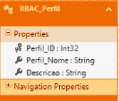
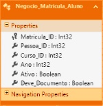
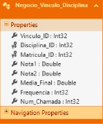

Web App para Gerenciamento de Recursos Acadêmicos
- Resumo
- Introdução
- Objetivo
- Objetivo Especifico
- Organização
- Revisão Bibliográfica
- ERP
- ASP.NET MVC
- ASP.NET
- MVC
- Banco de Dados
- Cloud Computing
- Microsoft Azure
- Bootstrap
- App Service
- Procedimentos Metodológicos
- Visão Geral
- Análise de Requisitos
- Requisitos Funcionais
- Requisitos Não-Funcionais
- Diagrama de Caso de Uso
- Detalhamento do Caso de Uso
- Banco de Dados
- Detalhamento do Banco de Dados
- Segurança
- Autentificção
- Controle de Permissões de Acesso
- Resultados e Apresentação da Interface do Sistema
- Login
- Indice
- Criar
- Detalhes
- Editar
- Deletar
- Gestão de Custos do Projeto
- Processos de Gerenciamento dos Custos
- Gestão dos Custos para Implementação do Sistema em Cloud Coumputing
- Processos da gestão de custos
- Plano de Gerenciamento dos Custos
- Estimativa de Custos
- Determinar o Orçamento
- Controlar os Custos
- Considerações Finais e Recomendações
- Referências
- Glossário
Resumo
Partindo de uma análise de um ambiente institucional sem sistema adequadamente informatizado, e conciliando a devida necessidade de informatização com a necessidade de desenvolvimento de um sistema de gerenciamento acadêmico mais moderno e melhor preparado para o mercado atual, foi idealizado o Nimbus Acad. E para isso, foi realizado um estudo de recursos e planejamento baseado em sistemas de ERP (Planejamento dos Recursos da Empresa), no qual muitas empresas de diversos setores já vem implementando este tipo de sistema, permitindo a otimização do fluxo de informação e interação dentro da organização, juntamente com a análise e desenvolvimento da modelagem do banco de dados em SQL Database, as funções do sistema em C#, e a aplicação que foi modelada em ASP.NET MVC. Buscando simplificar o desenvolvimento do sistema ao seguir a arquitetura de desenvolvimento MVC, usada para aplicação web de forma inovadora, onde a sua estruturação de desenvolvimento se categorizam em três partes da aplicação, sendo elas: Modelos, onde se concentra os objetos que agem sobre os atributos das tabelas do banco de dados; Exibição, em que é desenvolvida toda a parte de estética e interface para com o usuário do sistema; Controladores, onde é desenvolvida toda a mecânica do sistema, mantendo nesta parte todas as funções do sistema e também relacionando as três camadas, unindo-as no sistema completo. E por fim, é associado o projeto em uma nova expectativa, onde o próximo passo é desenhado para um avanço baseado em uma estrutura Multi-Inquilino conjunta com o MVC, permitindo abranger no mesmo sistema, uma gama maior de instituições e implementando o sistema totalmente interativo entre instituições distintas que utilizam do sistema Nimbus Acad.
Introdução
Este projeto foi idealizado pelos integrantes do grupo, que tiveram experiência como estagiários de suporte técnico na ETEC Dona Escolástica Rosa.
Em sua administração, a ETEC Dona Escolástica Rosa conta hoje com aproximadamente 40 computadores e outros equipamentos pertinentes ao trabalho e mais de 60 funcionários, incluindo professores e prestadores de serviço terceirizado. A instituição conta também, em sua estrutura física, quatro laboratórios de informática com vinte desktops cada e mais 07 (sete) desktops disponíveis aos alunos e 02 (dois) notebooks disponíveis aos professores fora do horário de aula na biblioteca.
Apesar de a escola ter evoluído e terem bons equipamentos de rotina administrativa e acadêmica, o cenário administrativo, por outro lado, não evoluiu tanto assim: existem muitos processos que são realizados manualmente, tais como matrículas e rematrículas, fichas diversas de preenchimento manual etc.
A rede de computadores é administrada por um servidor de 01 (um) terabyte que roda o sistema operacional Windows server 2003 (desatualizado) e um switch central gerenciável; Todo o controle da instituição é feito através de arquivos básicos do Windows (pacote office); A internet utilizada é uma banda larga de 60 (sessenta) megabytes distribuída a todos os equipamentos da escola e uma internet fornecida pelo governo (Intragov) de 08 (oito) megabytes utilizada somente por funcionários específicos.
Diante deste cenário, o trabalho é focado na rede lógica da escola onde foram identificados os seguintes problemas:
- Acesso precário ao servidor: Não há controle de restrição de acesso, pois o login gerenciado pelo servidor é problemático. Onde o usuário de um setor tem acesso a arquivos/diretórios de quaisquer setores.
- Interface não amigável: O servidor possui interface Windows Server 2003, sendo assim, visualmente ultrapassado, e confuso para os usuários, que em sua maioria não se adaptam facilmente aos recursos do sistema.
- Limitação de acesso: O acesso ao servidor é restrito aos usuários apenas dentro das dependências da instituição, atrasando assim, a dinâmica de controle e troca de informações acadêmicas
- Segurança de acesso: Mesmo o acesso sendo feito dentro da instituição, a aplicação de servidor atual não disponibiliza uma boa segurança de acesso, uma vez que os usuários não são identificados dentro do servidor.
- Servidor Local: Com um sistema de servidor desatualizado, a instituição, mantem um servidor local ligado 24 horas por dia. O que poderia ser evitado e economizado com um sistema mais atual trabalhando em nuvem.
A partir dos problemas descritos, foi idealizado um sistema ERP (Enterprise Resource Planning - Planejamento dos recursos da empresa) que integra dados e processos da organização em um só sistema. Alunos, professores e funcionários irão interagir por uma interface em comum.
Detalhadamente, os problemas acima descritos serão sanados da seguinte forma, por funções:
- Gestão do Sistema:
- Usuários com as permissões para gerenciamento de sistema poderão:
- Definir as regras (permissões de acesso) no sistema;
- Vincular as permissões a perfis de acesso;
- Bloquear/Desbloquear usuários do sistema;
- Cadastrar ou remover funcionários;
- Cadastrar, ver, editar ou remover cargos da instituição;
- Cadastrar, ver, editar ou remover tipos de documentos a serem utilizados ou expedidos pela instituição;
- Institucional:
- Usuários com permissões de nível institucional poderão:
- Cadastrar, ver, editar ou remover cursos, disciplinas, módulos, dependendo das suas permissões;
- Definir horário das disciplinas;
- Cadastrar ou remover matrículas de novos alunos;
- Realizar operações como: Atribuir notas, atribuir presenças para alunos, visualizar as notas de um aluno ou de todos os alunos em uma disciplina, tudo dependerá das permissões de cada usuário;
- Geral:
- Todos os usuários poderão alterar suas informações cadastrais;
- Os usuários poderão enviar mensagens para outros usuários, poderão ver e remover mensagens que tenham sido direcionadas a ele;
Assim propiciando um ambiente mais confiável, integrado, dinâmico, que possa facilitar o trabalho dos funcionários da instituição e torna-los mais transparentes.
Objetivo
Desenvolver um sistema que fará toda a gestão acadêmica de uma instituição de ensino e a interação/comunicação entre todos os departamentos da escola (secretaria, coordenação, e coordenação pedagógica – que inclui professores e alunos). O sistema foi previamente denominado como Nimbus Acad, Nimbus do latim “Nuvem” e Acad do Inglês “Academic”.
Objetivo Especifico
Os objetivos específicos para o desenvolvimento deste projeto são:
- A partir do levantamento das necessidades, identificar quais os aspectos acadêmicos e administrativos serão levados em conta no desenvolvimento de um sistema de gerenciamento acadêmico.
- Desenvolver um sistema para corrigir os problemas encontrados na pesquisa de campo em escola técnica estadual, utilizando como arquitetura de desenvolvimento o sistema MVC.
Apresentar o sistema para controle educacional utilizando as ferramentas SQL Database para banco de dados, App Service para armazenar o sistema, ambos sendo disponibilizados em plataforma de Cloud Computing.
Organização
No segundo capítulo serão descritas as ferramentas utilizadas para o desenvolvimento do sistema.
O terceiro capítulo irá elucidar sobre como as ferramentas funcionam e como foram usadas na prática para o desenvolvimento do sistema Nimbus Acad.
Em seguida, apresentam-se-ão as referências utilizadas no desenvolvimento deste projeto e o glossário.
Revisão Bibliográfica
Para a construção deste sistema serão utilizados os conceitos de Enterprise Resource Planning (ERP), plataforma ASP.NET MVC, plataforma Bootstrap, banco de dados SQL Database, servidor de aplicação App Service, e Cloud Computing.
ENTERPRISE RESOURCE PLANNING ERP
O ERP vem do inglês (Enterprise Resource Planning, ou Planejamento dos Recursos da Empresa) e representa uma série de atividades (módulos) gerenciadas por um software ou por pessoas, que ajudam na gestão de processos dentro de uma empresa, portanto, ERP é um Sistema de Gestão Corporativa.
Um pacote de software integrado, que pode contribuir na simplificação das atividades é o Planejamento de Recursos Empresariais (ERP – Enterprise Resource Planning), composto por um conjunto de módulos funcionais padrão, que podem ser adaptados às necessidades específicas de cada organização, com o objetivo de suportar a maioria das suas operações (ALVES; MATOS, 2011).
Uma importante meta do ERP é facilitar o fluxo de informações de uma organização para otimizar a tomada de decisões dentro da empresa. Um sistema de ERP ajuda de maneira eficaz as corporações a atingirem esta meta, coletando e organizando informações em diferentes níveis, oferecendo em tempo real indicadores de performance que ajudam na gestão.
ASP.NET MVC
Neste sistema serão utilizados: a plataforma ASP.NET, o .NET Framework e ASP.NET MVC. E apesar da similaridade entre os nomes, possuem funções distintas que serão descritas a seguir.
ASP.NET
O ASP.NET é a plataforma da Microsoft para o desenvolvimento de aplicações Web, que permite criar páginas dinâmicas através de uma linguagem de programação baseado no Framework .NET, que pode ser escrita em várias linguagens, como C#, F# e Visual Basic .NET.
Esta plataforma é uma tecnologia de scripting com o servidor, que permite colocar em uma página web, scripts que serão executados no servidor. As aplicações Web ASP.NET necessitam do Framework .NET e do servidor IIS para executar na plataforma Windows.
MVC
MVC significa “MODEL” “VIEW” “CONTROLLER”. E o ASP.NET MVC é uma arquitetura usada para desenvolver aplicações web em ASP.NET, diferente ao desenvolvimento web tradicional, onde a sua estrutura de desenvolvimento melhor organizada.
MVC é a plataforma da Microsoft para projetar e construir aplicações web, e também é um padrão de design arquitetônico. Como um padrão de design, MVC e seus padrões variantes têm sido em torno de algum tempo, mas o quadro ainda é relativamente novo, dando-lhe a vantagem de ter aprendido a partir de estruturas anteriores. Se você estiver familiarizado com outros frameworks de desenvolvimento web, então você pode rastrear o histórico de recursos-chave e ver como os problemas comuns são evitados. Por enquanto, esteja ciente de que o MVC incorpora lições aprendidas de muitos sistemas e não é em si mesmo "uma coisa". (HARRISON et al, 2015, p.9)
A estrutura MVC inclui os seguintes componentes:
- Modelos: Camadas que permitem a manipulação dos dados (leitura, escrita e validação). São as partes que implementam a lógica para o domínio de dados do aplicativo.
- Exibições: Camada que implementam os componentes que exibem a interface do usuário (IU) do aplicativo.Normalmente, esta IU é criada a partir dos dados do modelo.
- Controladores: Camada que lida com a interface do usuário e o domínio de dados, selecionando uma exibição de renderização que mostra essa IU e requisitando ou enviando dados para a camada de modelos manipular.
Em conjunto com a ferramenta MVC é utilizada a Entity Framework, ferramenta de acesso a dados desenvolvida pela Microsoft.
Atualmente existem três modelos de desenvolvimento com o Entity Framework:
- Database First – Gera a camada de modelo a partir de um banco de dados já existente.
- Model First – Define um modelo conceitual a partir do banco de dados e do código que foram gerados.
- Code First - inicia o desenvolvimento pela camada de model gerando o banco de dados a partir desta camada, conhecido também como Design Dirigido por Domínio (Domain-Driven Design – DDD).
Neste projeto é utilizado o Entity Framework Database First, pois será desenvolvido primeiro o banco de dados.
Banco de Dados
SQL Database é um serviço de banco de dados em ambiente Cloud Computing. Baseado no mecanismo Microsoft SQL Server, o SQL Database oferece desempenho previsível, escalabilidade sem tempo de inatividade, continuidade de negócios e proteção de dados - tudo com administração quase zero. Como ele é baseado no mecanismo do SQL Server, o SQL Database suporta ferramentas, bibliotecas e APIs existentes do SQL Server, o que facilita o movimento e a extensão à nuvem.
Cloud Computing
Computação em nuvem define-se pela utilização da memória, da capacidade de armazenamento e cálculo de computadores e servidores, compartilhados e interligados por meio da internet, seguindo o princípio da computação em grade.
Cloud Computing refere-se tanto às aplicações fornecidas como serviços pela Internet, Hardwares e sistemas de softwares em Datacenters que provêm os serviços. Estes serviços têm sido referidos como Software-as-a-Service (SaaS). (ARMBRUST et al., 2010, p.50)
Microsoft Azure
O Microsoft Azure é um ambiente preparado pela Microsoft para suporte de serviços de nuvem, com uma vasta coleção de recursos, sendo eles, armazenamento, web, análise, computação, serviços moveis e banco de dados.
A união de diversos recursos em uma única ferramenta de ambiente de desenvolvimento, aumenta a produtividade na área de TI, já que, em um mesmo ambiente, o desenvolvedor pode realizar, se não todas, a maioria das configurações, testes e contar com suporte para uma gama grande e diversificada de opções de desenvolvimento.
Bootstrap
O Bootstrap é um framework, criado por Mark Otto e Jacob Thornton, ambos engenheiros do Twitter, e tem como objetivo tornar mais fácil o desenvolvimento de interface (front-end) para páginas web. Ele disponibiliza padrões para os elementos HTML mais usados, além de elementos personalizados com o uso de elementos e classes CSS padrões.
Além disso, o Bootstrap também tem como objetivo o auxílio no desenvolvimento responsivo, em que adapta seus projetos web com um simples código, para celulares, tablets e também para desktops com uma através de media queries CSS, que é a utilização de Media Types com uma ou mais expressões que define para que tipo de media um certo código CSS é direcionado, envolvendo características de uma média para definir formatações para diversos dispositivos
App Service
O App Service (Serviço de Aplicativo) é uma ferramenta do Microsoft Azure, que disponibiliza uma plataforma de serviço de hospedagem e implementação de aplicação em web e para dispositivos moveis de qualquer plataforma.
O App Service permite que aplicativos em desenvolvimento sejam integrados em plataformas de serviço, conecte-se com aplicativos locais e automatiza os processos de negócio.
Os aplicativos executados pelo App Service Microsoft Azure são processados em VMs (maquinas virtuais) gerenciadas, e limitadas conforme o plano assinado pelo serviço.
Procedimentos Metodológicos
Neste capítulo será abordado todo o detalhamento referente aos procedimentos metodológicos do sistema, tomando como base um planejamento inicial, desde a análise dos requisitos, até a finalização com a apresentação dos resultados de desempenho do sistema e sua interface. Incluindo também, o caso de uso e o detalhamento dos módulos do sistema, a modelagem do banco de e seu respectivo detalhamento, e também a descrição dos métodos, e como foi realizado a função de autenticação dos usuários, colaborando com a segurança de todo o sistema.
Visão Geral
O Nimbus Acad é um sistema planejado e desenvolvido em ASP.NET MVC, com intuito de agilizar e auxiliar o gerenciamento e a troca de informações dentro de uma instituição acadêmica que possui o sistema implementado e em funcionamento. Inspirado em sistemas de tecnologia ERP, o Nimbus Acad busca abranger todos os setores de uma instituição informatizando sua interação entre os mais diversos setores como alunos, professores, coordenadores e administração acadêmica, otimizando a comunicação, e também permitindo uma adaptação das regras de sua funcionalidade, tornando assim o sistema fácil adaptável ao ambiente já estabelecido pela instituição.
Análise de Requisitos
Na Engenharia de Software, a análise de requisitos abrange as tarefas que lidam com a investigação, a definição e o escopo de novos sistemas ou alterações do mesmo.
Requisitos Funcionais
Requisito funcional define uma função de um sistema de software. É apresentado a seguir, os requisitos analisados para o desenvolvimento deste projeto:
- Cadastrar novo setor: O sistema permitirá o cadastramento de novos setores acadêmicos (Ex.: Coordenação Pedagógica) e vinculá-los a uma série de permissões de acesso dentro do sistema. Apenas usuários com as devidas permissões poderão executar tal ação;
- Cadastrar novo usuário: Usuários com as devidas permissões poderão cadastrar novos usuários, não podendo haver dois usuários repetidos, e serão vinculados à um ou mais setores acadêmicos;
- Alterar dados dos usuários: Os usuários poderão alterar seus dados cadastrais, apenas usuários com os devidos privilégios poderão bloquear/desbloquear um usuário;
- Manipular tabelas: Os usuários poderão criar, atualizar, ler e deletar dados de tabelas, porém serão apenas as tabelas relacionadas ao setor ao qual o usuário está vinculado.
A partir deste levantamento, torna possível o desenvolvimento do diagrama de caso de uso, das tabelas do banco de dados e do sistema.
Requisitos Não-Funcionais
Os requisitos não-funcionais estão relacionados ao uso da aplicação em termos de desempenho, usabilidade, confiabilidade, segurança, disponibilidade, manutenção e tecnologias envolvidas. Não é preciso o cliente ter ciência sobre eles, pois são características mínimas para o desenvolvimento de um software de qualidade, ficando a cargo do desenvolvedor optar por atender esses requisitos ou não. O requisitos não-funcionais para este projeto são:
- Requisitos de Processo:
- O sistema será desenvolvido com a plataforma ASP.NET MVC para que todas as funcionalidades anteriormente descritas sejam atendidas. Para o sistema gerenciador de banco de dados será utilizado o SQL Database;
- A partir da etapa inicial do projeto, será construído um documento descrevendo as definições do sistema, bem como suas funcionalidades e interações com os usuários, e os estudos do caso de uso, juntamente com a modelagem do banco de dados;
- Requisitos de Segurança:
- Com o uso de login, os usuários terão restrições no acesso aos conteúdos e ferramentas do sistema;
- As senhas serão criptografadas usando a Criptografia PBKDF-2 (Password-Based Key Derivation Function 2);
- Requisitos de Usabilidade:
- Será desenvolvido uma interface amigável aos usuários, de forma intuitiva e objetiva, facilitando o uso do sistema;
Terá ferramentas práticas, específicas para cada usuário, para facilitar a experiência do usuário.
Diagrama de Caso de Uso
O Diagrama de Caso de Uso tem o objetivo de auxiliar a comunicação entre os analistas e o cliente. Um diagrama de Caso de Uso descreve um cenário que mostra as funcionalidades do sistema do ponto de vista do usuário, o cliente deve ver no diagrama de Caso de Uso, as principais funcionalidades do sistema.
Com base na análise de requisitos e no objetivo geral do projeto foi elaborado o seguinte caso de uso:
Detalhamento do Caso de Uso
O detalhamento do caso de uso auxilia no entendimento do diagrama de caso uso. Aqui estão descritos qual módulo do sistema os serviços (funções) do sistema estão relacionados, bem como quem age diretamente nos serviços e módulos, e qual a finalidade do módulo.
Módulo: Autenticação
Serviços: Efetuar login, Confirmar e-mail cadastrado.
Perfil (Atores): Usuário não autenticado.
Finalidade: Identificação e autorização de um usuário para acesso ao sistema
Visão Geral: Esse módulo possui a finalidade de garantir o acesso de um usuário ao sistema, bem como confirmar o e-mail de cadastro, possibilitando maior segurança no login.
Módulo: Autenticação
Serviços: Autenticar usuário, Negar acesso, Autorizar acesso, Assimilar permissões.
Perfil (Atores): Sistema.
Finalidade: Autenticação de um usuário ao sistema e definição de nível de acesso.
Visão Geral: Esse módulo visa autenticar as informações informadas pelo usuário, a fim de autorizar ou negar seu acesso ao sistema, bem como definir as permissões de acesso aos diferentes módulos do sistema.
Módulo: Administrativo
Serviços: Criar curso, Criar módulo, Criar Disciplina, Definir horário, Ver documento, Criar documento, Editar/Remover documento, Ver lista de funcionários, Cadastrar funcionário, Criar cargo, Editar/Remover cargo.
Perfil (Atores): Usuário autenticado com permissão de nível Administrativo ou Full.
Finalidade: Gerenciamento do setor administrativo da instituição a partir do sistema.
Visão geral: Esse módulo permite ao usuário fazer gestão dos setores da instituição a partir do nível administrativo, gerenciando funcionários, cursos, módulos e disciplinas, bem como os cargos dos funcionários e os documentos pertinentes à instituição, cada serviço requer uma permissão específica, mas que seja de nível administrativo.
Módulo: Institucional
Serviços: Ver informações de curso, Ver informações de módulo, Ver informações de disciplina, Editar/Remover curso, Editar/Remover módulo, Editar/Remover disciplina, Realizar chamada, Atribuir notas aos alunos, Atribuir presença única, Ver notas aluno, Ver notas disciplina, Corrigir nota, Remover presença, Matricular aluno, Buscar aluno, Listar presença.
Perfil (Atores): Usuário Autenticado com permissões de nível Institucional ou Full.
Finalidade: Gerenciamento do setor acadêmico da instituição a partir do sistema.
Visão Geral: Esse módulo possibilita ao usuário realizar a gestão dos recursos acadêmicos e dos alunos da instituição através do sistema, cada serviço requer uma permissão específica, mas que seja de nível institucional.
Módulo: Gerenciamento do Sistema
Serviços: Criar perfil de acesso, Ver lista de perfis de acesso, Editar/Remover perfil de acesso, Ver lista de usuários, Remover usuário, Bloquear/Desbloquear usuário, Vincular perfil ao usuário, Criar permissão, Ver lista de permissões, Editar/Remover permissão, Vincular permissão ao perfil.
Perfil (Atores): Usuário Autenticado com permissões de nível de Gerenciamento de sistema ou Full.
Finalidade: Gerenciamento dos diferentes níveis de acesso e dos usuários do sistema.
Visão Geral: A partir deste módulo, é possível gerenciar os perfis de acesso para cada módulo e serviço do sistema, facilitando a gestão e o controle dos usuários no sistema.
Módulo: Geral
Serviços: Escrever mensagem, Ver mensagem, Remover mensagem, Editar informações cadastrais.
Perfil (Atores): Usuário Autenticado.
Finalidade: Envio, recebimento e descarte de mensagens e edição de informações cadastrais.
Visão Geral: Este módulo requer apenas que o usuário esteja autenticado no sistema, aqui, é capaz de enviar mensagens a outros usuários do sistema, receber mensagens de outros usuários, e remover mensagens já lidas, é possível também alterar informações cadastrais referentes ao próprio usuário.
Banco de Dados
A modelagem de um banco de dados é uma etapa essencial para o bom planejamento de um projeto, tendo em vista que a sua melhor estruturação auxiliará da maneira mais otimizada possível todas as consultas e registros das funções do sistema.
A partir do caso de uso pode-se planejar uma modelagem do banco de dados para facilitar o manuseio das informações necessárias para o sistema inteiro.
Detalhamento do Banco de Dados
O detalhamento do banco de dados possibilita um melhor entendimento das tabelas que compõem o banco de dados do sistema. Aqui estão descritas as tabelas e quais a suas funcionalidades dentro do sistema.
|
RBAC_Usuario: Tabela Principal de segurança que abriga todos os usuários do sistema. |
|
|
RBAC_Link_Usuario_Perfil: Tabela de segurança que faz o relacionamento entre as tabelas RBAC_Usuario e RBAC_Perfil. |
|
|  |
RBAC_Perfil: Tabela de segurança abrange as especificações sobre os tipos de perfil. |
|
RBAC_Link_Perfil_Permissao: Tabela de segurança que faz o relacionamento entre a tabela RBAC_Perfil e RBAC_Permissao. |
|
|
RBAC_Permissao: Tabela de segurança que abrange as permissões de acesso ao serviço do sistema. |
|

|
Negocio_Pessoa: Tabela que armazena as informações necessárias para o cadastro e armazenamento de uma pessoa. |
|
Negocio_Endereco: Tabela que armazena as informações necessárias de endereço de uma pessoa. |
|

|
Negocio_Base_Endereco: Tabela que abrange todos os endereços já cadastrados no sistema anteriormente, com objetivo de evitar a despadronização de endereços iguais. (Ex.: “Praça da Sé” e “Prç da Sé”) |
|
Negocio_Notificacao: Tabela que armazena as informações sobre notificações, fazendo a relação entre usuário emissor e usuário receptor. |
|
|
Negocio_Curriculo: Tabela que armazena as informações referentes aos currículos do usuário do sistema. |
|
|
Negocio_Documento: Tabela que armazena os tipos de documentos utilizados pelo sistema. |
|
|
Negocio_Doc_Devente: Tabela que armazena os documentos necessários para o sistema que estão pendentes, relacionando-os ao usuário devedor. |
|
|  |
Negocio_Matricula_Aluno: Tabela que mantem as informações referente ao matricula do aluno (Matricula, Curso, Ano). |
|
Negocio_Curso: Tabela Quem mantem as informações de especificação dos cursos (Nome, Descrição, Coordenador). |
|
|
Negocio_Modulo: Tabela que armazenas as informações sobre a turma matriculada em determinado curso. |
|
|
Negocio_Disciplina: Tabela que mantem as informações sobre determinada disciplina cadastrada no sistema. |
|
|
Negocio_Frequencia: Tabela que armazena as informações referente a frequência do aluno em uma aula especifica. |
|
|
Negocio_Quadro_Horario: Tabela que mantem as relações de horários, disciplinas e curso de uma aula cadastrada no sistema. |
|
|
Negocio_Vinculo_Modulo: Tabela que faz a relação de alunos ao modulo pertencente. |
|
|  |
Negocio_Vinculo_Disciplina: Tabela que faz o armazenamento do detalhamento sobre o andamento do aluno em seu curso (Notas, Media Final, Frequência). |
|
Negocio_Tipo_Funcionario: Tabela que armazena as informações referente a descrição dos cargos cadastrados no sistema. |
|
|
Negocio_Funcionario: Tabela que faz relação do funcionário com o seu cargo. |
Segurança
Para manter a integridade do sistema, é utilizado no sistema dois níveis de segurança: a autenticação de usuários e o controle de permissões de acesso.
Autentificção
Para segurança dos usuários, é utilizada uma senha para autenticação do mesmo. Sendo assim, têm-se a necessidade de garantir a proteção dessa senha, para que “terceiros” e invasores não tenham acesso a ela, essa proteção se dá por meio de uma criptografia de hash[1], utilizando como algoritmo o PBKDF-2 (Password-Based Key Derivation Function 2). O algoritmo utiliza a senha, um salt para adicionar entropia a senha, e um número de interações. O número de interações repete a encriptação de hash sobre a senha múltiplas vezes para produzir uma chave derivada para a senha, e esta, por sua vez será armazenada no banco de dados, bem como o salt utilizado.
Controle de Permissões de Acesso
Para garantir a integridade de informações, não permitindo que um professor tenha acesso a funcionalidades do sistema que seriam de área administrativa da instituição, por exemplo, o sistema foi desenvolvido com base no conceito de controle de acesso baseado em papéis (RBAC – Role Based Access Control). Este tipo de controle permite que sejam definidas as permissões de acesso a um usuário com base nos papéis exercidos por ele no sistema.
No Nimbus Acad, este controle é realizado via banco de dados, uma vez que as permissões são armazenadas em uma tabela no banco de dados e vinculadas aos papéis, e os papéis, também armazenados em tabela no banco de dados, são vinculadas aos usuários, possibilitando o controle do acesso.
Resultados e Apresentação da Interface do Sistema
A interface do sistema é o que facilita a interação do usuário com as funcionalidades do sistema. Sendo assim, foi desenvolvido uma interface amigável e totalmente intuitiva, onde o usuário terá apenas as informações necessárias e para o que deseja fazer no sistema. Cada parte da interface do sistema é chamado de tela.
Aqui é apresentado a tela de login, que é a “porta de entrada” do usuário para o sistema, em seguida são apresentadas as telas de “Índice”, “Criar”, “Detalhar”, “Editar” e “Deletar”.
Apesar das telas mostradas interagirem com apenas algumas das tabelas do banco de dados e funções do sistema, elas são “genéricas”, pois todas as funções do sistema seguem o conceito de CRUD (Create-Read-Update-Delete – Criar-Ler-Atualizar-Deletar) de um banco de dados, e as funções de GET e POST, que buscam e atualizam, respectivamente, informações em um banco de dados
Login
A primeira etapa do usuário no sistema é o login, onde é gerada requisição de GET para o sistema, o qual devolve um formulário a ser preenchido pelo usuário ainda não autenticado.
Após o formulário ser apresentado, o usuário deverá preencher o seu nome de usuário e sua senha. Caso tenha esquecido a senha, basta clicar sobre “Esqueceu senha?”, e será redirecionado para a página de requisição de alteração de senha. Informado o nome de usuário e senha, ao clicar em “Log in”, será gerado uma requisição de POST, através dos dados informados. O sistema busca no banco de dados na tabela RBAC_Usuario se existe um usuário com o nome informado, se existe, é verificado se o usuário deve confirmar o e-mail de cadastro. Caso tenha que confirmar, o sistema retorna uma mensagem informando o usuário de que ele deve confirmar o e-mail de cadastro, com o e-mail confirmado. É feita a autenticação da senha informada.
Através da criptografia da senha utilizando como salt o valor que está salvo no usuário no banco de dados, é feito a comparação desta senha criptografada, tal comparação realizado pela função PasswordSignIn() da classe SignInManager. Retornado o valor da autenticação (“Success”), o acesso é autorizado, retornado “Failure”, o acesso é negado.
Indice
Com o usuário autenticado, é possível acessar os recursos do sistema para executar operações com as tabelas do banco de dados. Assim como nas demais páginas de “Índice”, a página /Curso/Index faz apenas uma requisição GET, não há POST, pois esta faz apenas consultas no banco de dados. O sistema retorna da requisição todos os dados vindos da tabela de Negocio_Curso solicitados para apresentar na tela em forma de tabela, sendo possível, a partir desta página, criar um novo curso, ou redirecionar para uma página com mais detalhes de um curso já existente.
Criar
A partir do “Índice”, o usuário poderá realizar uma operação de inserção no banco de dados, esta operação é conhecida como “Criar”. Assim como nas demais páginas de inserção, a página de Nova Permissão (/RBACPermissao/NovaPermissao) faz uma requisição GET para carregar o formulário a ser preenchido pelo usuário.
Com os campos preenchidos, ao clicar em “Salvar” é gerada a requisição POST, esta função irá armazenar no banco de dados na tabela RBAC_Permissao os dados informados nos campos do formulário.
Detalhes
Através do “Índice”, o usuário também poderá ver mais informações sobre um objeto no banco de dados (um curso, uma disciplina, uma permissão, etc). Sendo assim, as páginas denominadas “Detalhes”, realizam apenas a requisição GET, pois não realiza nenhuma alteração no bando de dados. Na página de Detalhes de um usuário (/RBACUsuario/Detalhes/1), é gerado a requisição (GET) que buscará no bando de dados, na tabela de RBAC_Usuario, através do ID informado na página de “Index”, retornando as informações que deverão ser apresentadas na página.
Editar
Pela da página de “Detalhes”, pode-se editar um objeto na tabela. As requisições de GET e POST de “Editar”, ocorrem assim como em “Criar”, ou seja, a requisição GET irá buscar no banco as informações a serem apresentadas na tela, e também os valores destes campos, deixando o formulário já preenchido. A página de “Editar” de Permissão exemplifica como acontece essa operação.
Nas requisições POST, o sistema fará um comparativo de todos os valores dos campos do formulário, salvando no banco de dados apenas os valores que foram alterados, e realizando uma operação de atualização no banco de dados na tabela referente ao que foi alterado, neste caso, será na tabela de RBAC_Permissao. Esta operação de atualização é diferente da operação de inserção do método “Criar”.
Deletar
Outra operação que pode ser realizada a partir da página de “Detalhes” é a operação de “Deletar”. Ao carregar a página, é gerada uma requisição de GET, que carrega as informações do objeto a serem removidas de uma tabela. E são apresentadas para que o usuário possa conferir se realmente deseja realizar esta operação. A partir da página “Deletar” de Permissão, é possível visualizar como esta operação ocorre, sendo a primeira etapa a de apresentação dos atributos do objeto a ser removido.
Verificada as informações, o usuário clica no botão “Deletar”. A partir desse botão é gerado a requisição POST. Esta função irá buscar o objeto no banco de dados na tabela de RBAC_Permissao (tabela usada por esta página) e irá remover da tabela o objeto com o mesmo ID do objeto apresentado anteriormente, e então é executada a operação de remoção no banco de dados.
Gestão de Custos do Projeto
Um importante componente da produtividade de TI é a Gestão de Custos de TI, cujo objetivo é tirar métricas para reduzir os custos e produzir em maior ou igual qualidade.
Dar a devida visibilidade desses custos pode aumentar o foco nos investimentos do projeto, para que, gerem resultados favoráveis sobre o sistema.
Neste capítulo, a área de custos em TI será amplamente tratada quanto a escolha de um recurso referente ao servidor Cloud Computing escolhido.
Processos de Gerenciamento dos Custos
Os processos da gestão de custo utilizados no projeto foram realizados com base nos processos descritos pelo PMBOK. Esses métodos auxiliam em muito o gerenciamento dos custos, baseado no escopo definido através deles. São eles:
- Plano de gerenciamento de custos
O processo de estabelecer as políticas, os procedimentos e a documentação necessários para o planejamento gerenciamento, despesas, e controle dos custos do projeto. O principal benefício deste processo é o fornecimento de orientação e instruções sobre como os custos do projeto serão gerenciados ao longo do projeto.
- Estimativas de custos
O processo de desenvolvimento de uma análise dos recursos monetários necessários para executar as atividades do projeto. O principal benefício deste processo é a definição dos custos exigidos para concluir os trabalhos do projeto.
As estimativas de custos devem ser refinadas durante o curso do projeto para refletir detalhes adicionais conforme se tornarem disponíveis e as premissas forem testadas.
O processo de agregação dos custos estimados de atividades individuais ou pacotes de trabalho para estabelecer uma linha de base dos custos autorizada.
O orçamento do projeto inclui todos os fundos autorizados para executá-lo o projeto.
O processo de monitoramento do andamento do projeto para atualização no seu orçamento e gerenciamento das mudanças feitas na linha de base de custos.
A atualização no orçamento requer o conhecimento dos custos reais gastos até a presente data. Qualquer aumento do orçamento autorizado somente pode ser aprovado através do processo para realizar o controle integrado de mudanças.
Gestão dos Custos para Implementação do Sistema em Cloud Coumputing
Para a implementação deste projeto em ambiente de Cloud Computing são necessários alguns recursos, estes são analisados, calculados e especificados a seguir.
Processos da gestão de custos
Como dito anteriormente, a gestão dos custos está resumida em 4 processos sendo estes o Plano de gerenciamento de custos, Estimativa de custos, Definição do orçamento e Controle dos custos. Com isso foi detalhado todo o processo de gerenciamento de custos para a implementação do sistema em ambiente de Cloud Computing, demonstrado a seguir.
Plano de Gerenciamento dos Custos
A primeira etapa neste processo é analisar o ambiente empresarial, para saber qual plataforma se enquadra melhor, quais ferramentas serão utilizadas, se necessário, que reformulações a empresa terá de fazer, como por exemplo melhoria na infraestrutura de rede.
Feito este levantamento é realizada uma análise para saber qual plataforma de Cloud Computing deve ser utilizada. Existem boas opções no mercado. Pode-se citar AWS, fornecida pela Amazon; Cloud Platform, fornecida pela Google, e Azure, fornecida pela Microsoft.
Como este projeto está em desenvolvimento com a plataforma .NET, a plataforma cloud mais viável é a Microsoft Azure, pois já tem um ambiente preparado para aplicações .NET.
Após a análise do ambiente empresarial e da definição da plataforma cloud, é realizada uma análise de quais ferramentas da plataforma ‘cloud’ serão utilizadas, quantidade de máquinas da plataforma, taxa de transferência de unidades de dados pelo banco de dados, bem como capacidade de processamento.
Para o projeto, é necessário, inicialmente, de um serviço de banco de dados relacional, um serviço de aplicação, monitorador de aplicação e um plano de suporte. O serviço de banco de dados relacional a ser usado é o SQL Database, nele ficará armazenado o banco de dados e terá conexão constante com o serviço de aplicação.
O serviço de aplicação (App Service) conterá a aplicação em si. Para análise das métricas da aplicação (quantidade de acesso, requisições de banco de dados, erros, entre outros), é utilizada a ferramenta Application Insight. E por fim, para correção de falhas, como problemas de conexão com o banco de dados, erro no serviço de aplicações, é contratado um suporte técnico fornecido pela Microsoft.
Estimativa de Custos
Os softwares utilizados serão custeados seguindo a tabela de preços da plataforma, sendo assim, contratado um plano que se adeque às necessidades do projeto. Através da ferramenta Microsoft Azure Price Calculator, é possível fazer uma estimativa dos custos seguindo a tabela de preços do Microsoft Azure.
Para o serviço de banco de dados, é calculado, inicialmente, um Simple Database, ao invés de Elastic Database, pois este opera sobre vários bancos de dados, em contrapartida este projeto utiliza apenas um banco de dados, sendo assim, o Simple Database se torna a opção mais viável. Com configuração em modo Standard S0, consiste em taxa de 10 DTUs (Data Transfer Unit), 250GB de armazenamento, com plano mensal ativo durante 31 dias, totalizando um custo estimado de R$56,36 por mês.
Para o serviço de aplicação, estima-se apenas o modo Basic como plano inicial. Esse modo consiste em 1 núcleo de processamento com 1.75GB de RAM e 10GB de armazenamento. Assim como o plano do serviço de banco de dados, o plano do App service será mensal, ativo durante 31 dias, totalizando um custo de R$209,25 por mês.
O Application Insight tem como uma de suas modalidades, um plano gratuito, onde é disponibilizado até 7 dias de dados brutos (não filtrados), até 90 dias de dados agregados (filtrados) e 5 milhões de pontos de medição, por ser um plano gratuito, não há custo.
O suporte técnico provido pela empresa fornecedora da plataforma Cloud, será incluído inicialmente como plano básico, o qual já vem com a assinatura na assinatura. Esse plano é gratuito e contém as seguintes características: gestão de 15 faturamento e subscrição da conta, dashboard de serviços, e submissão de solicitações para incidentes via web. Por ser plano gratuito, não há custo.
A partir disso, somando o serviço de banco de dados (R$56,36), o App service (R$209,25), Application Insight (gratuito) e o suporte técnico (gratuito), têm se um custo inicial total estimado em R$256,61 por mês.
Determinar o Orçamento
Após a definição dos serviços a serem usados da plataforma e do cálculo de custo de cada serviço, bem como o tempo de utilização de cada serviço, é realizado um orçamento final, envolvendo não apenas o custo do contrato da plataforma e de seus serviços, mas também dos custos extras, bem como melhorias de infraestrutura (Ex.: Conexão com a internet).
Para fazer a contratação dos serviços do Cloud Computing, é necessário saber quanto a empresa pode investir por mês, ou seja, para implementação destes serviços é necessário que a empresa tenha no mínimo R$350,00 para que invista R$256,61 na plataforma e tenha R$93,39 como margem de segurança.
Controlar os Custos
Para o controle dos custos deste projeto, após a contratação dos serviços, é necessário que a empresa invista mensalmente R$256,61 para poder ter acesso constante dos serviços contratados. Sendo assim, permanece a margem de segurança estimada no orçamento em R$93,39.
Como resumo de investimento para a implementação da aplicação, tem se a seguinte tabela:
Caso os mantenedores do sistema, tenham condição de investir mais na plataforma de Cloud Computing, e a aplicação necessite de mais processamento, maior taxa de DTUs, mais pontos de análise das métricas, ou contratar um suporte técnico mais eficaz, convêm para a realizar este investimento.
Os cálculos para o serviço de banco de dados são estimados através do DTU (Data Transfer Unit), a Tabela 2 demonstra claramente a relação preço por DTU.
Como pode ser observado, ao aumentar a quantidade de DTUs o preço do serviço aumenta aproximadamente o dobro, partindo de R$56,36 para 10 DTUs, até atingir R$562,46 para 100 DTUs. A forma de cálculo de custo do App Service não é muito diferente do cálculo para o serviço de banco de dados, ou seja, o preço varia conforme sejam alocados mais núcleos para o processamento. Na Tabela 3 abaixo pode se observar essa relação.
Assim, igualmente a taxa de aumento do custo para o serviço de banco de dados, o App Service tem um aumento de duas vezes o valor do plano anterior, visto que o número de núcleos aumenta nesta mesma taxa (duas vezes). Observa-se a variação no preço para investir em Application Insight com mais pontos de análises.
Como dito anteriormente, é fornecido uma camada de plano gratuitos (R$0,00) com apenas 5 milhões de pontos de análise. O drástico aumento de mais 10 milhões acarreta em um custo de aproximadamente R$90,00 e, ao aumentar para o plano full de 50 milhões, tem se o custo na margem dos R$370,00.
Na Tabela 5, encontra-se a taxa de adição para contratação de serviços de suporte técnico. O plano do suporte técnico é calculado de modo diferente, pois depende de mais de um fator para alterar o preço.
Pode-se observar que os planos são escaláveis, ou seja, o plano Developer contém as funções do plano Included, o plano Standard contém as funções do plano Developer, e o plano Professional contém as do plano Standard. Tais planos acabam por encarecer o plano de custo do projeto, porém, tempo e dinheiro, que seriam gastos nas correções de erros, são eliminados, pois estes ficam a cargo da empresa fornecedora da plataforma.
Sendo assim, cabe ao responsável o controle da plataforma Cloud, analisar qual a necessidade de investir mais, e se há processos consumindo os serviços que não deveriam ou precisam utilizá-los; Ou então, se o plano atual não suporta as necessidades da aplicação. Dessa forma, mantém o custo dentro dos limites do que é necessário para a aplicação.
Considerações Finais e Recomendações
O setor acadêmico exige um controle mais moderno e informatizado, facilitando assim, o seu gerenciamento e otimizando a sua comunicação interna.
Tendo em vista que, uma instituição acadêmica envolve uma grande quantidade de funções e entidades participantes de todo o processo acadêmico (alunos, professores, coordenadores, administração acadêmica e outros), o Nimbus Acad amplia esta comunicação e viabiliza a troca de informações entre todos os usuários do sistema, além, também, de agir como ferramenta auxiliar, informatizada, que otimiza as funções de uma instituição acadêmica.
Ao final do projeto, pode-se ressaltar que as escolhas realizadas ao longo do planejamento de todo o sistema, levando em consideração todo o aprendizado para o desenvolvimento desta aplicação, desde a implementação de um visual moderno e em ascensão no mercado como é a ferramenta Bootstrap, utilizada no visual do sistema, chegando até ao mais complexo, como a arquitetura MVC e toda a modelagem do sistema.
O mercado vem em constante crescimento para com este modelo de arquitetura, uma vez que o desenvolvimento planejado e bem estruturado de tal maneira, como é o MVC, melhora o desenvolvimento do projeto, mantendo não apenas uma organização como também a agilidade, onde a divisão das três partes distintas do sistema (banco de dados, interface, e a mecânica da aplicação) facilita o seu desenvolvimento e também a sua manutenção, já que, o mesmo, se mantem dividido em suas devidas partes, bem categorizada e de fácil localização ao longo de todo o código.
Também pode ser considerado, ao longo do último capítulo sobre o gerenciamento de custos do projeto, onde foi retratado os processos para a análise da melhor opção quanto ao servidor em Cloud Computing que melhor atenderá o sistema, que a ferramenta Azure, da Microsoft, é a melhor opção para este projeto, levando em consideração todo o seu custo benefício, e o seu potencial de suporte, que se encaixa ao projeto, suprindo bem a sua necessidade.
Por fim uma expectativa nova para o Nimbus Acad é estabelecida a partir das escolhas dos recursos do projeto realizadas no planejamento, onde o sistema pode ser ampliado, baseado na arquitetura multi-tenancy, que permite que múltiplos inquilinos compartilhem os mesmos recursos físicos como um aplicativo ERP, mas permaneçam isolados logicamente. Trazendo assim o sistema para um novo ambiente de mercado, permitindo que todas as instituições que utilizarem do sistema Nimbus Acad, interajam e se mantenham em um mesmo ambiente de ERP Acadêmico, facilitando assim a comunicação e a troca de informações entre elas. Visando assim, rumar o projeto para um novo patamar em que o Nimbus Acad se torne o mais completo ERP acadêmico na medida em que suas necessidades vão sendo atendidas.
Referências
- ALVES, Deriks Marques et al. Avaliação de Implantação de Sistema Enterprise Resources Planning (ERP) - Fatores de Sucesso e Dificuldades. Revista Pensar: Revista Acadêmica da Faculdade Promove, Belo Horizonte, Mg, v. 2, n. 2, p.01-18, jul. 2013. Semestral. Disponível em: <http://revistapensar.com.br/tecnologia/artigo/no=a57.pdf>. Acesso em: 07 set. 2016.
- ARMBRUST, Michael et al. A view of cloud computing. Communications Of The Acm, [s.l.], v. 53, n. 4, p.50-58, 1 abr. 2010. Association for Computing Machinery (ACM). Disponível em: <http://dx.doi.org/10.1145/1721654.1721672>. Acesso em: 14 nov. 2016.
- BEN-GAN, Itzik. Microsoft SQL Server 2012 T-SQL Fundamentals. United States Of America: Online Training Solutions, Inc., 2012. 412 p.
- BRITO, Edivaldo. Visual Studio: crie apps em C# e .NET e exporte para múltiplas plataformas. 2015. Disponível em: <http://www.techtudo.com.br/tudo-sobre/visual-studio.html>. Acesso em: 13 jun. 2016.
- CRISTO, Wallace Borges; FERREIRA, João Carlos Peixoto; FURTADO, João Paulo Coelho. GESTÃO DE TI NAS ORGANIZAÇÕES CONTEMPORÂNEAS. Revista Pensar: Revista Acadêmica da Faculdade Promove, Belo Horizonte, Mg, v. 2, n. 1, p.01-14, jan. 2013. Semestral. Disponível em: <http://revistapensar.com.br/tecnologia/artigo/no=a23.pdf>. Acesso em: 07 set. 2016.
- DYKSTRA, Tom; ANDERSON, Rick. Getting Started with Entity Framework 6 Cody First using MVC 5: Step by Step Guide. The ContosoUniversity: Syncfusion, 2014. 291 p. Disponível em: <https://drive.google.com/file/d/0By-qrrle2MiQVENnX3VmZFFJMTQ/view>. Acesso em: 06 jun. 2016.
- HARRISON, Nick. ASP .NET MVC Succinctly. Morrisville: Syncfusion, 2015. 84 p. Disponível em: <https://drive.google.com/file/d/0By-qrrle2MiQdllFQXdBcWQ1UDQ/view>. Acesso em: 05 abr. 2016.
- HOLANDA., Itsmf da. Fundamentos do Gerenciamento de Serviços em TI: baseado na ITIL. Holanda: van Haren Publishing., 2006. 236 p.
- KURHEKAR, Shantanu. What is SQL Database? Introduction to SQL Database. Disponível em: <https://docs.microsoft.com/en-us/azure/sql-database/sql-database-technical-overview>. Acesso em: 14 nov. 2016.
- MAYO, Joey. C# Succinctly. Morrisville: Syncfusion, 2015. 100 p. Disponível em: <https://drive.google.com/file/d/0By-qrrle2MiQRFJRQ1VjREhOZ2c/view>. Acesso em: 22 abr. 2016.
- MICROSOFT (Seattle). Microsoft App Service (Org.). Aplicativos Web. 2016. Disponível em: <https://azure.microsoft.com/pt-br/services/app-service/web/>. Acesso em: 20 out. 2016.
- MICROSOFT (Seattle). Microsoft Azure (Org.). O que é o Azure? 2016. Disponível em: <https://azure.microsoft.com/pt-br/overview/what-is-azure/>. Acesso em: 20 out. 2016.
- O QUE é ERP? Para que serve esse software? 2015. Disponível em: <http://sistemaserp.org/o-que-e-erp/>. Acesso em: 12 ago. 2015.
- OLIVEIRA, Fernando André de; VASCONCELLOS, Fabrício. Avaliação de Implantação de Sistema Enterprise Resources Planning (ERP) - Fatores de Sucesso e Dificuldades. Revista Pensar: Revista Acadêmica da Faculdade Promove, Belo Horizonte, Mg, v. 4, n. 1, p.01-15, jan. 2015. Semestral. Disponível em: <http://revistapensar.com.br/tecnologia/artigo/no=a94.pdf>. Acesso em: 07 set. 2016.
- PERES, Ricardo. Entity Framework CodeFirstSuccinctly. Morrisville: Syncfusion, 2014 121 p. Disponível em: <https://drive.google.com/file/d/0By-qrrle2MiQcUtMV2EtbjVSUFk/view>. Acesso em: 25 abr. 2016.
- RANGEL, João. Bootstrap - Primeiros Passos. Disponível em: <https://www.html5dev.com.br/blog/2013/01/16/bootstrap-primeiros-passos/>. Acesso em: 15 nov. 2016.
- SAMPAIO, Marcos Costa; FARIAS, Arthur Lucio; NETO, Elói Rocha. UML - Unified Modeling Language. Disponível em:<http://www.dsc.ufcg.edu.br/~sampaio/cursos/2007.1/Graduacao/SI-II/Uml/diagramas/usecases/usecases.htm>. Acesso em:14out. 2016.
- SILVA, Débora Cristiane; ZADRA, Augusto Nogueira. Cloud Computing: o reflexo das políticas de segurança nas organizações de grande porte. Revista Pensar: Revista Acadêmica da Faculdade Promove, Belo Horizonte, Mg, v. 4, n. 1, p.1-17, jan. 2015. Semestral. Disponível em: <http://revistapensar.com.br/tecnologia/artigo/no=a92.pdf>. Acesso em: 07 set. 2016.
- TEIXEIRA, José Ricardo. Utilizando CSS Media Queries. Disponível em: <http://www.devmedia.com.br/utilizando-css-media-queries/27085>. Acesso em: 15 nov. 2016.
- VASCONCELLOS, Fabricio Pires; NUNES, Diogo de Freitas; FERNANDES, Wellington Machado. Avaliação de Implantação de Sistema Enterprise Resources Planning (ERP) - Fatores de Sucesso e Dificuldades. Revista Pensar: Revista Acadêmica da Faculdade Promove, Belo Horizonte, Mg, v. 3, n. 2, p.01-15, jul. 2014. Semestral. Disponível em: <http://revistapensar.com.br/tecnologia/artigo/no=a86.pdf>. Acesso em: 07 set. 2016.
- ZYMLER, Benjamin et al. Boas Práticas em Segurança da Informação. 4. ed. Brasília: Tcu - Tribunal de Contas da União, 2012. 108 p. Disponível em: <http://www4.planalto.gov.br/cgti/assuntos/publicacoes/2511466.pdf>. Acesso em: 18 out. 2016
Glossário
|
Arquivo |
Conjunto de dados digitalizados que podem ser gravados em um dispositivo de armazenamento e tratado como ente único. |
|
Asp.net |
Plataforma desenvolvida pela Microsoft Corporation para desenvolvimento de aplicações. |
|
Backup |
Cópia de segurança dos arquivos. |
|
Banco de dados |
Conjunto de arquivos relacionados entre si. |
|
Bootstrap |
Framework de auxílio para desenvolvimento Front-End responsivo. |
|
CPD |
Sigla de centro de processamento de dados. |
|
CRUD |
Operações que podem ser realizadas em tabelas de um banco de dados,sendo elas: Create (Criar), Read (Ler), Update (Atualizar) e Delete (Deletar). |
|
CSS |
Linguagem de desenvolvimento para a folha de estilos do site, com finalidade de otimizar o visual da página Web. |
|
Dados |
Uma sequência de símbolos quantificados ou quantificáveis. Ex.: um texto é um dado |
|
Página Dinâmica |
Páginas web com maior flexibilidade na alteração de conteúdo. |
|
Diretório |
Subdivisão de um disco ou de outro meio de armazenamento capaz de conter arquivos. |
|
Disco rígido |
Disco rígido, popularmente chamado também de hd (hard drive) é a memória secundária, local onde são armazenados os arquivos do computador. |
|
ERP |
Enterprise Resource Planning (planejamento dos recursos da empresa), são softwares que integram todos os dados e processos de uma organização em um único sistema. |
|
Framework |
Estrutura real ou conceitual destinada a servir de suporte ou guia para a construção de algo que expande a estrutura em algo útil. |
|
Front-End |
Parte do desenvolvimento do sistema que se refere apenas a interface da página Web que servira de interação homem e máquina. |
|
GET |
Função de acesso a informação de banco de dados para consulta. |
|
HTML |
Linguagem de Marcação de Hipertexto, que permite a criação de documentos para a produção de página web. |
|
IIS |
É um servidor Web flexível, seguro e gerenciável para hospedar qualquer coisa na Web. |
|
Interatividade |
Capacidade de um sistema de comunicação ou interação. |
|
Interface |
Meio pelo qual o usuário interage com um programa ou sistema operacional. |
|
Interface amigável |
Interface visual do sistema no qual facilita a interpretação e o uso de suas ferramentas. |
|
Login |
Forma de identificação do usuário no sistema. |
|
Megabyte |
Múltiplo do byte, que vale 1.000 kilobytes (símbolo: mb). |
|
Multimídia |
Técnica para apresentação de informações que recorre simultaneamente a diversos meios de comunicação, mesclando texto, som, imagens fixas e animadas. |
|
Pendrive |
Pen drive ou memória USB flash drive é um dispositivo que permite o armazenamento de arquivos. |
|
PMBOK |
Guia para o conjunto de conhecimentos de gerenciamento do projeto. |
|
POST |
Função de atribuição de uma nova linha de informações à um banco de dados. |
|
Rede |
Sistema constituído pela interligação de dois ou mais computadores e seus periféricos, com o objetivo de comunicação, compartilhamento e intercâmbio de dados. |
|
Responsivo |
Método de desenvolvimento Front-End único, para Web, que otimiza a adaptação da página Web ao ambiente do dispositivo a ser acessado. |
|
Scripting |
Programas escritos para um ambiente de tempo de execução especial que automatizam a execução de tarefas que poderiam ser executadas uma a uma por um operador humano. |
|
Servidor |
Sistema de computação centralizada que fornece serviços a uma rede de computadores. |
|
Sistema operacional |
O sistema operacional é responsável por alocar recursos de Hardware e escalonar tarefas. |
|
SQL |
Structured Query Language (linguagem de consulta estruturada) é uma linguagem Padrão de gerenciamento de dados para manipulação de arquivos e tabelas em bancos de Dados. |
|
Switch |
Equipamento que interliga os computadores em uma rede. |
|
Terabyte |
Múltiplo do byte, que vale 1000 gigabytes (símbolo: tb). |
|
Web |
Nome pelo qual a rede mundial de computadores (internet) se tornou conhecida, e possibilita a comunicação entre todos os computadores conectados a essa rede.
|